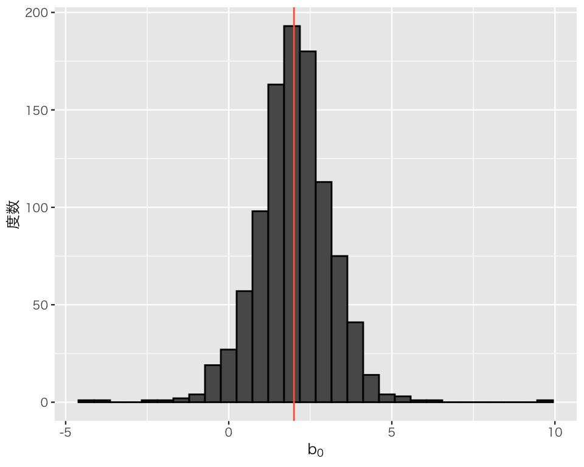
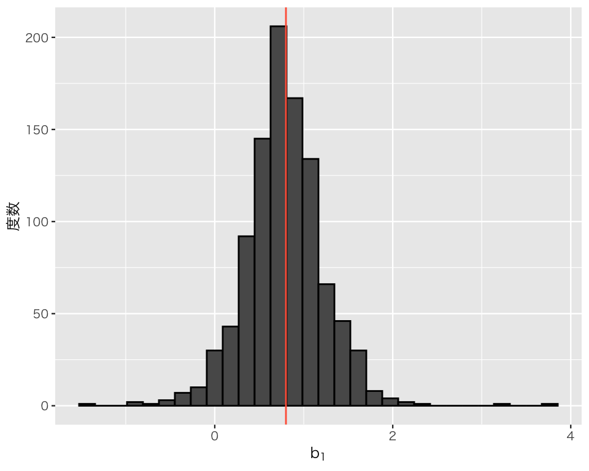
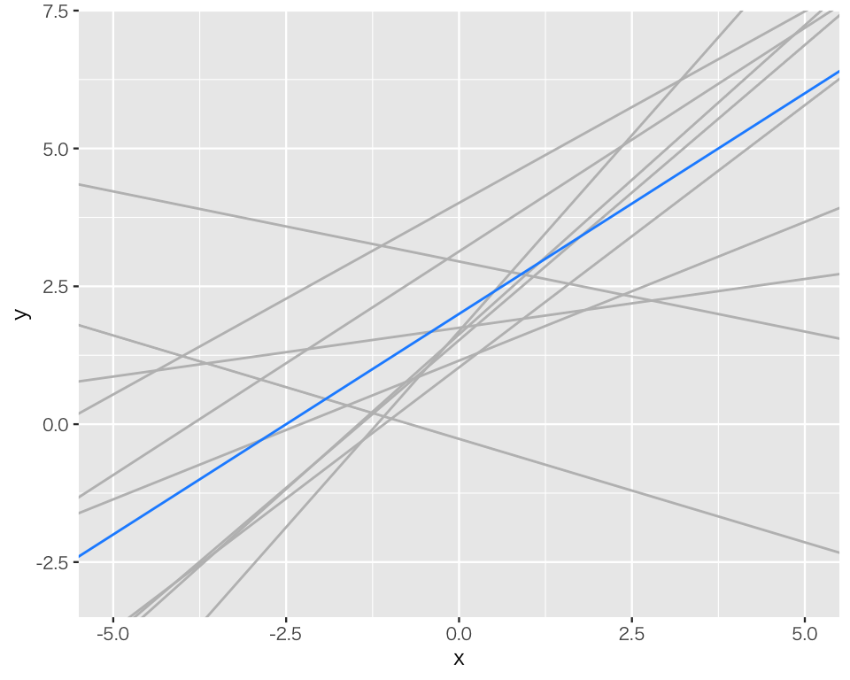

pacman::p_load(tidyverse,
broom,
shiny)
if (.Platform$OS.type == "windows") {
if (require(fontregisterer)) {
my_font <- "Yu Gothic"
} else {
my_font <- "Japan1"
}
} else if (capabilities("aqua")) {
my_font <- "HiraginoSans-W3"
} else {
my_font <- "IPAexGothic"
}
theme_set(theme_gray(base_size = 9,
base_family = my_font))5 回帰分析による統計的推定
今回の目標
- Rで回帰直線を求める方法を身につける（2回目）
- 回帰直線を統計的推定に使う方法を理解する
5.1 準備
まず、必要なパッケージを読み込む。
5.2 単回帰のシミュレーション
授業用のShiny アプリを使ってみよう。 shiny::runGitHub() でアプリを呼び出して使う。使い方は実習中に説明する(username は自分の名前ではなく、yukiyanai のままにする)。
runGitHub(username = "yukiyanai",
repo = "simple_ols_sim",
ref = "main")5.3 回帰分析のシミュレーション
応答変数 \(Y\) と説明変数 \(X\) の真の関係（つまり、母集団における関係）が以下の式で表されるとする。 \[ Y_i = \beta_0 + \beta_1 X_i + \varepsilon_i. \]
ここで、\(\beta_0\) が\(y\)切片、\(\beta_1\) が回帰直線の傾きである。 \(\varepsilon\) は誤差項と呼ばれるもので、\(\varepsilon \sim \mbox{Nomarl}(0, \sigma)\)であり、\(\sigma\) は正規分布 (normal distribution) の標準偏差である。 つまり、誤差\(\varepsilon_i\)は平均0、標準偏差\(\sigma\)の正規分布に従う。
この関係は、次のように書くこともできる。 \[ Y_i \sim \mbox{Normal}(\beta_0 + \beta_1 X_i, \sigma). \]
例として、\(\beta_0 = 2\)、\(\beta_1 = 0.8\) の場合について考えよう。このとき、\(Y\) と\(X\) の真の関係（「真」の関係などというものがあれば、だが）は、 \[ Y_i = 2 + 0.8X_i + \varepsilon_i \] と表せる。
回帰分析では、観測された\(Y\) と\(X\) の値から、\(\beta_0\) と \(\beta_1\) の値を推定することになる。 以下のシミュレーションでは、回帰分析による推定が、\(\beta_0 = 2\)、\(\beta_1 = 0.8\)という値にどれだけ近い値を出せるかどうかを確かめる。
5.3.1 シミュレーションの方法
シミュレーションを行うために、データを生成する。私たちは真の関係を知っているので、その関係を利用する。
まず、標本サイズ \(N\) を決める。試しに、標本サイズを5にしてみよう。
N <- 5次に、\(X\) の値を決める。とりあえず、\([-5, 5]\) の一様分布から\(X\)の実現値（観測値）\(x\) をランダムに作ってみよう。
x <- runif(N, min = -5, max = 5)続いて、\(Y\)の実現値\(y\) を生成する。真の関係は、\(Y = 2 + 0.8X + \varepsilon\) である。
まず、切片と傾きの値を設定する。
beta0 <- 2
beta1 <- 0.8次に、\(\varepsilon\) を作る。 \(\varepsilon \sim \mbox{Normal}(0, \sigma)\) なので、誤差項の標準偏差 \(\sigma\)（あるいは分散 \(\sigma^2\)）を決める必要がある。ここでは、\(\sigma = 2\) としてみよう。
sigma <- 2この標準偏差を使って、\(\varepsilon\) をランダムに生成する。
epsilon <- rnorm(N, mean = 0, sd = sigma)これで、\(y\) が生成できる。
y <- beta0 + beta1 * x + epsilon\(X\) の観測値 \(x\) と\(Y\) の観測値 \(y\) が手に入ったので、回帰分析を実行してみよう。 まず、（必要ではないが）tidy data の条件を満たすデータフレーム df を作ろう。
df <- tibble(y = y,
x = x)このデータフレームを使って、回帰分析を実行してみよう。
fit <- lm(y ~ x, data = df)
tidy(fit) |>
mutate_if(is.double, round, digits = 2) # 小数第2位まで表示# A tibble: 2 × 5
term estimate std.error statistic p.value
<chr> <dbl> <dbl> <dbl> <dbl>
1 (Intercept) 1.04 0.68 1.53 0.22
2 x 0.37 0.32 1.19 0.32\(\beta_0\)と\(\beta_1\)の推定値をそれぞれ \(b_0\)、\(b_1\) とすると、\(b_0\)=1.04、\(b_1\)=0.37 である。推定はどれくらい正確だろうか？
5.3.2 複数回のシミュレーション
1回だけのシミュレーションでは、その結果が偶然得られたものなのか、必然的な結果なのかの区別がつかない。そこで、上のシミュレーションを繰り返す。複数のコマンドを何度も実行するのは面倒なので、シミュレーション用の関数を function() で定義してしまおう。
単回帰 (simple regression) のシミュレーションを行うので、関数名をsimple_reg にする。
simple_reg <- function(n, beta0 = 0, beta1 = 1, sigma = 1) {
## 単回帰のシミュレーションを実行するための関数
## 引数：n = 標本サイズ
## beta0 = 真のy切片（既定値は0）
## beta1 = 真の傾き（既定値は1）
## sigma = 誤差項の標準偏差（既定値は1）
# x を一様分布 Uniform(-5, 5) から作る
x <- runif(n, min = -5, max = 5)
# epsilon を正規分布 N(0, sigma^2) から作る
epsilon <- rnorm(n, mean = 0, sd = sigma)
# 真のモデルからyを作る
y <- beta0 + beta1 * x + epsilon
# 回帰分析を実行する
fit <- lm(y ~ x)
# beta の推定値を関数の出力として返す
return(coef(fit))
}function() で定義した関数は、return() で指定された対象を返し（これを戻り値または返り値, [return value] と呼ぶ）、終了する。ここで定義した関数は、切片と傾きの推定値を返す。
試しに、この関数を使ってみよう。私たちが実行したいのは、\(N = 5\)、\(\beta_0 = 2\)、\(\beta_1 = 0.8\)、\(\sigma = 2\) の場合なので、次のようにする。
simple_reg(n = 5, beta0 = 2, beta1 = 0.8, sigma = 2)(Intercept) x
2.8879093 0.6671121 もう1度やってみよう。
simple_reg(n = 5, beta0 = 2, beta1 = 0.8, sigma = 2)(Intercept) x
0.3506386 1.2218857 もう1度やってみよう。
simple_reg(n = 5, beta0 = 2, beta1 = 0.8, sigma = 2)(Intercept) x
0.9274339 0.8886625 このように、実行する度に異なる結果が得られる。
これを繰り返し実行すれば、最小二乗法がどれくらい正確に推定を行えるか理解することができるはずである。しかし、得られた結果が偶然の結果ではないと信じるためには、繰り返し回数を多くする必要がある。たとえば、1,000回のシミュレーションを行う場合、上のように毎回コマンドを実行するのは面倒である。
そこで、forループを使ってシミュレーションを自動化しよう。まず、シミュレーション回数 n_sims を決める。
n_sims <- 1000次に、シミュレーション結果を保存するための容器を用意する。私たちのシミュレーションでは、シミュレーションの繰り返し回数が n_sims 回、推定する母数（パラメタ, parameters）の数が2つなので、n_sims行$$2列の行列を用意しよう。行列は、matrix() で作れる。 matrix() では、行列の要素と、行数 (nrow)、列数 (ncol) を指定する。ここでは空の容器を作りたいので、要素をすべて NA（欠測値）にした行列を作る。
result <- matrix(NA, nrow = n_sims, ncol = 2)行列の最初の5行を確認してみよう。
result[1:5, ] [,1] [,2]
[1,] NA NA
[2,] NA NA
[3,] NA NA
[4,] NA NA
[5,] NA NA要素がすべて NA になっていることがわかる。
わかりやすいように、行列の列に名前をつけておこう。
準備ができたので、forループ でシミュレーションを実行する。上で作った行列 result の \(i\) 行目に、\(i\)番目のシミュレーションの結果を保存する。
for (i in 1:n_sims) {
result[i, ] <- simple_reg(n = 5, beta0 = 2, beta1 = 0.8, sigma = 2)
}結果の最初の5行を確認してみよう。
result[1:5, ] b0 b1
[1,] -1.200901 -0.0914297
[2,] 3.104694 0.6014570
[3,] 1.895768 0.8450452
[4,] 1.830612 0.1283450
[5,] 2.754686 0.9659280シミュレーションの実行結果が保存されていることがわかる。
シミュレーションの結果を確認してみよう。 私たちが知りたいのは、回帰分析で、\(\beta_0=2\)、\(\beta_1 = 0.8\) がどれだけ正確に推定できるかということである。
まず、\(\beta_0\) の推定値である、\(b_0\) (b0) をヒストグラムにしてみよう。
res_data <- as_tibble(result) # 行列をデータフレームに変換する
hist_b0 <- ggplot(data = res_data, aes(x = b0)) +
geom_histogram(color = "black") +
labs(x = expression(b[0]), y = "度数") +
geom_vline(xintercept = 2, color = "tomato") # beta0 の真の値を示す
plot(hist_b0)
ヒストグラムに加えられた赤い直線が真の値を示している。データ生成と推定を繰り返すと、推定がうまくいくこともあれば、そうでないこともあるということがわかる。分布の形に注目すると、分布の中心は真の値付近にあり、平均すると推定がうまくいっているように見える。
実際、1000個得られたb0の平均値を求めると、
mean(res_data$b0)[1] 2.006503であり、真の値である2に近い。
同様に、\(\beta_1\) の推定値である、\(b_1\) (b1) をヒストグラムにしてみよう。
hist_b1 <- ggplot(data = res_data, aes(x = b1)) +
geom_histogram(color = "black") +
labs(x = expression(b[1]), y = "度数") +
geom_vline(xintercept = 0.8, color = "tomato") # beta1 の真の値を示す
plot(hist_b1)
ヒストグラムに加えられた赤い直線が真の値を示している。やはり、データ生成と推定を繰り返すと、推定がうまくいくこともあれば、そうでないこともあるということがわかる。分布の形に注目すると、分布の中心は真の値付近にあり、平均すると推定がうまくいっているように見える。
実際、b1の平均値は、
mean(res_data$b1)[1] 0.7842275であり、真の値である0.8に近い。
最後に、得られた回帰直線を図示してみよう。
plt <- ggplot(NULL) +
geom_abline(intercept = res_data$b0,
slope = res_data$b1,
color = "gray") +
geom_abline(intercept = 2,
slope = 0.8,
color = "dodgerblue") +
xlim(-5, 5) +
ylim(-3, 7) +
labs(x = "x", y = "y")
plot(plt)この図は、推定された回帰直線をグレーで、真の回帰直線を青で描いている。回帰直線1つをランダムに選ぶと、その線は必ずしも真の関係を正しく捉えていない。しかし、平均してみると、真の直線の周りに推定された線が集まっていることがわかる。つまり、平均的には、回帰分析はうまくいきそうである。
上の図では1000個の回帰直線が互いに重なり合っている部分が多く、ひとつひとつの直線がよく見えないので、ランダムに10個だけ選んで同様の図を作ろう。
res_data_sub <- slice_sample(res_data, n = 10) # データからランダムに10行選ぶ
plt_sub10 <- ggplot(NULL) +
geom_abline(intercept = res_data_sub$b0,
slope = res_data_sub$b1,
color = "gray") +
geom_abline(intercept = 2,
slope = 0.8,
color = "dodgerblue") +
xlim(-5, 5) +
ylim(-3, 7) +
labs(x = "x", y = "y")
plot(plt_sub10)
推定された回帰直線をグレーで、真の回帰直線を青で描いている。回帰直線1つをランダムに選ぶと、その線は必ずしも真の関係を正しく捉えていないことがよくわかる。
実際のデータ分析では、1つ（または少数）のデータセットを対象に分析を行うことが多い。つまり、グレーの直線のうちどれか1つ（または少数）だけが得られることになる。その直線は、\(X\)と\(Y\)の真の関係を捉えているとは言えないことが、今回のシミュレーションでよくわかっただろう。私たちは、標本（サンプル）から得られた1つの直線を手がかりにして統計的検定や統計的推定を行い、母集団（真の関係）についての理解を深めることを目指すことになる。
5.4 実習課題
- 上のシミュレーションと同じことを、標本サイズ \(N\) を 10、50、100 に設定して実行しなさい。標本サイズが大きくなると、どんなことが起きる？
- \(\beta_0\)、\(\beta_1\)、\(\sigma\) の値を自由に変更してシミュレーションを実行しなさい。